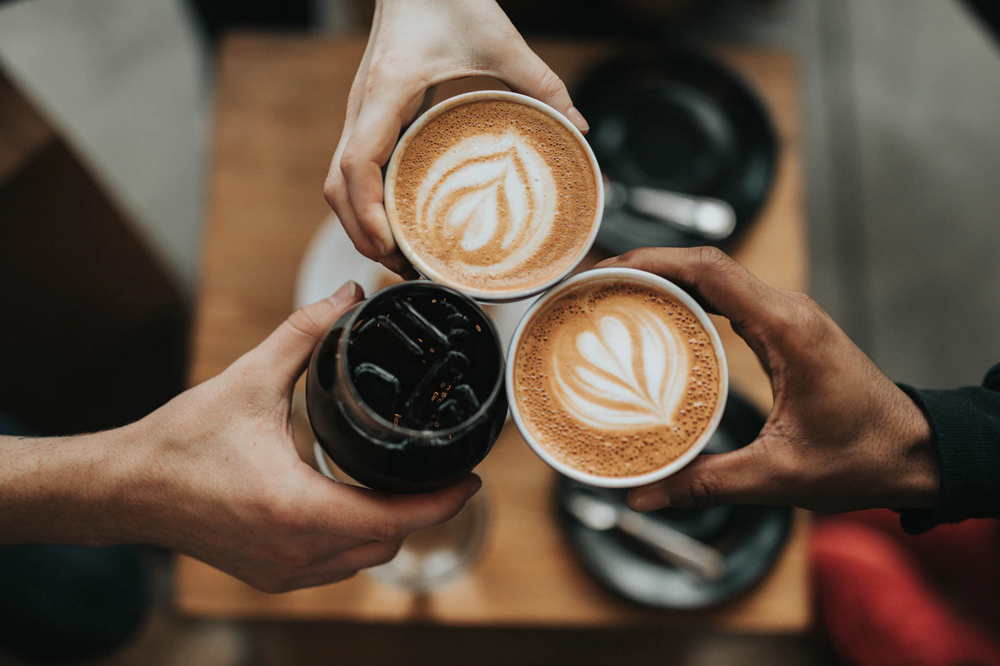
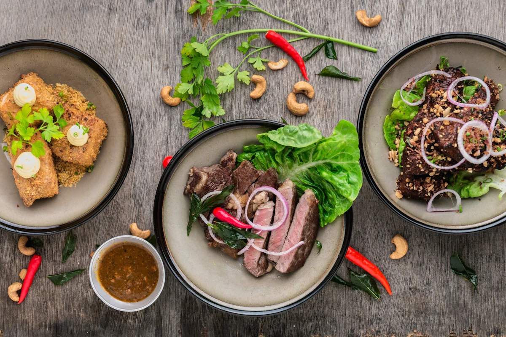
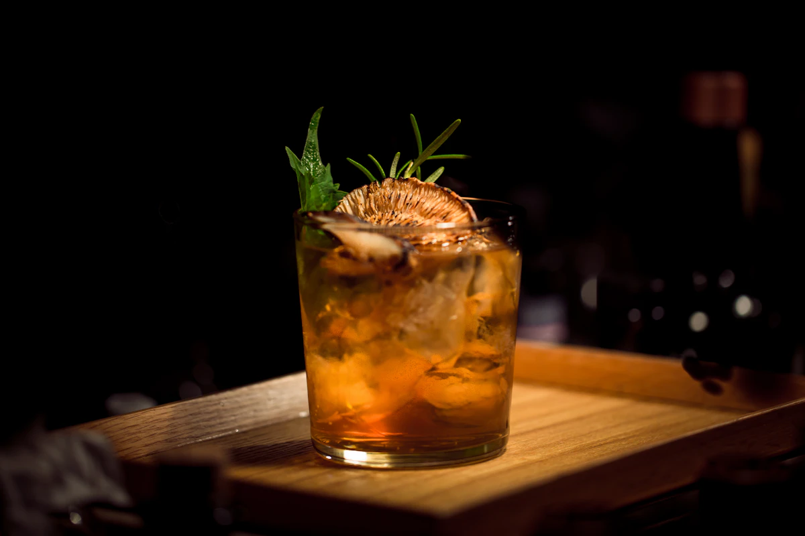
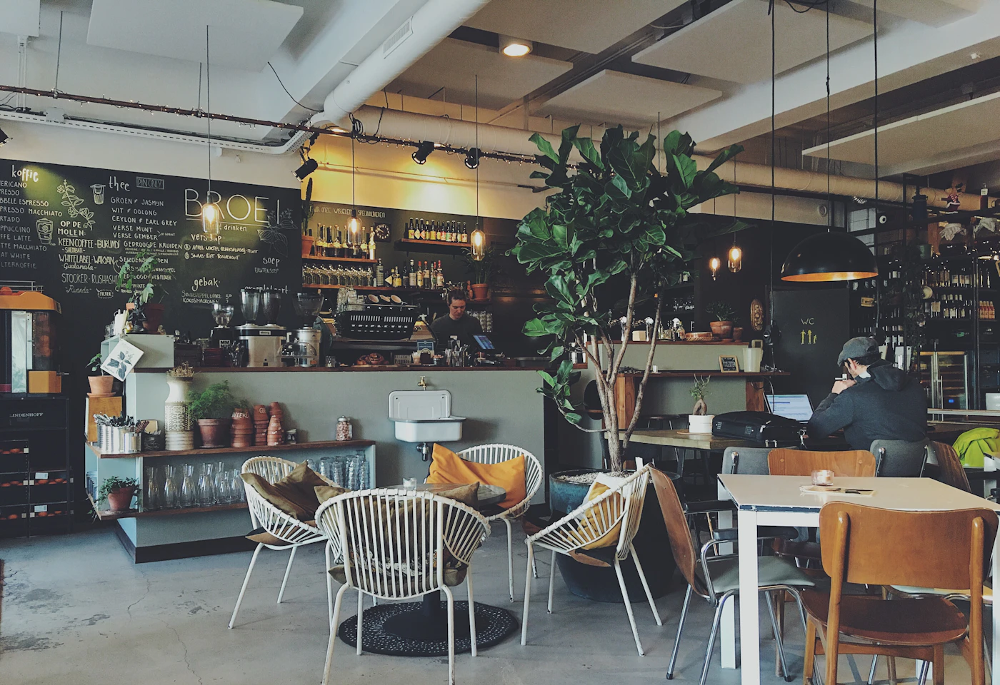

Voucher místo dárku
Když nevíte co, dejte čas u nás. Voucher na libovolnou částku napíšeme rukou a platí na všechno — od ranního filtru po půlnoční Negroni.
Napsat o voucher →Zin o jedné kavárně · Vydání č. 03 ·
Otevřeno od 7:30 · káva a ticho
Než se den rozběhne, patří stůl u okna vám. Filtr, který klidně stihne vystydnout, a nikdo vás nikam nežene.



Jeden podnik, tři nálady. Klikni na kapitolu a stránka se přepne do té denní doby.
Přes den se stůl většinou najde i bez ohlášení. Na večer, na větší partu nebo když chcete jistotu, radši zavolejte — domluvíme se za minutu.

Nebo prostě přijďte.
Zavolat →
Vstup zdarma, pokud není uvedeno jinak. Začínáme, až se setmí.
Když nevíte co, dejte čas u nás. Voucher na libovolnou částku napíšeme rukou a platí na všechno — od ranního filtru po půlnoční Negroni.
Napsat o voucher →Narozeniny, křest knížky, firemní sešlost bez konferenčního pachu. Po domluvě zavřeme dveře a večer patří jen vám — s kuchyní i barem.
Domluvit termín →